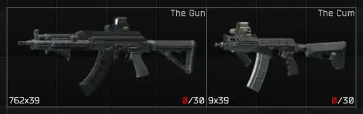
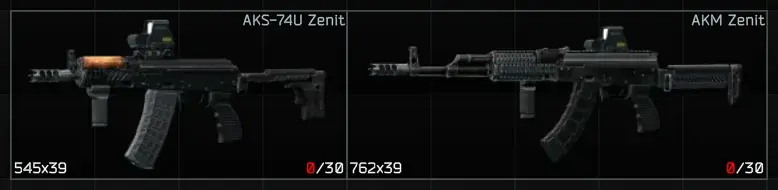
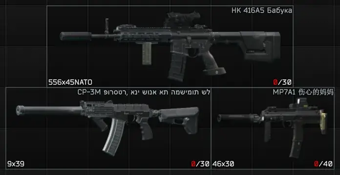
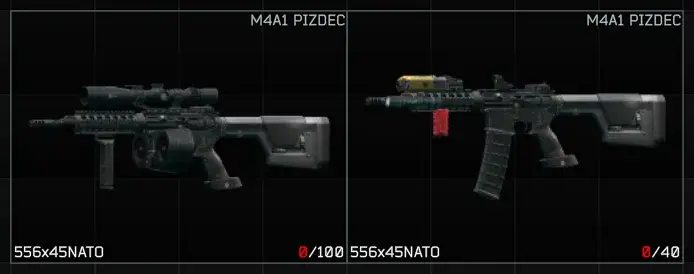
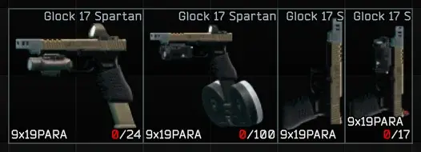

Flexible Builds
- Downloads
- 2,240
- Favourites
- 7
- Mod lists
- 14
Weapon preset and build improvements for SPT
I really like the concept of weapon builds. The idea of having different sets of parts for the same weapon — each optimized for a specific role (mobility, long range, low recoil, etc.) — is genuinely cool. However, THE CITY implements presets quite rigidly. A build is treated as an exact, fixed list of attachments and nothing else (thankfully, magazines are ignored).
Personally, I don’t care which exact flashlight or laser is mounted on my SuperUltraLasergun — I often just slap on whatever I have available at the moment. Yet I still want the weapon to be recognized and displayed as the SuperUltraLasergun build.
Additionally, preset names must be globally unique, meaning you cannot have the same name for different weapon models (e.g. an AK-74N “Zenit” build and an AKS-74 “Zenit” build at the same time). And, of course, your build names must only contain Latin characters.
This mod fixes these limitations. It lets you choose which attachment types are taken into account when matching a weapon in your inventory to a saved preset, allows you to use the same name for builds of different weapons, allows you to use non-Latin characters in names, and introduces a more flexible matching system.
New: Partial Matching
You can enable partial matching for builds.
This allows you to create “base builds” that define only a minimal required set of components. A weapon will be considered a match if it contains all components from the build, but may also include additional ones.
When multiple builds match, the mod will automatically pick the most specific one (the one with more components).
This makes it possible to:
- ignore unimportant attachments (like tactical devices) without excluding entire categories
- define layered builds (e.g. base → upgraded → full kit)
- combine with excluded mod types for even more flexibility
Hide base weapon name
You can switch to display only the preset name without the base model:

Same Names
Builds for different weapons can share the same name without conflicts:

Naming Freedom
Names can use characters other than Latin, as in container tags (even emoji☻).

Flexible Matching
Excluded attachment types (in these examples: sights, mags, mounts, tactical devices, and foregrips) are ignored when comparing builds, allowing them to be recognized as the same preset:

Another example of flexible matching:

Partial Matching
Create a base preset with a minimal number of attachments. Any additional attachments you add will not change the build name, as long as all elements from the base preset are present.
Flexible Matching
You can configure which mod types will be excluded from the preset matching check. The list is generated dynamically from all classes inheriting from the base Mod class — basically, every weapon modification the game recognizes appears in the config.
This makes it easy to ignore custom modification types added by other SPT mods (I haven’t seen any yet, but the option is there).
Hierarchy
Mod types are organized in a tree structure, where each parent contains its nested subtypes.
Toggling a parent mod class (e.g., “Sights”) will toggle all its child categories (collimators, optics, etc.).
If a child category is unchecked, the parent will also be unchecked, as not all children remain selected.
If you want vanilla behavior, simply select only Magazines in the config.
- Excluded mods are still saved as part of the preset — settings only affect matching and naming.
- Settings apply only to your own builds and do not affect built-in presets (Mechanic, Prapor, etc.).
- Settings now apply instantly — no restart or profile reload required.
Note: already displayed item names will only refresh when the game updates inventory. You can force this by exiting to main menu or removing and reattaching any weapon component.
Potentially compatible with all other mods, including those that add custom weapon modification types.
Version
1.2.1
Fixes
- Fixed an issue where weapon item names did not update after creating a new build
Now, when a new build is created, all items in the inventory with the same base weapon are refreshed and update their names if they match the build.
Version
1.2.0
Changes
- Added an option to hide the base weapon name from preset titles
- Allow to use non-Latin characters in build names (now matches container tags)
- Weapon names now update after changing settings (refresh occurs when the inventory screen updates, e.g., after returning to the main menu)
Version
1.1.0
New Features
Partial Matching
- Added a partial matching option for builds.
When enabled, you can create “base builds” that include only a minimal set of components. Adding extra attachments on top of such a build will not change its name. When multiple builds could match, the system will choose the most specific one (the one with more components).
In simple terms: a weapon is considered a match if it contains all components from the build, but may also include additional ones.
This can be used instead of excluding certain attachment types, or together with it for more flexibility.
Instant Settings Update
- Settings now apply automatically when changed.
No more inventory reloads required. Build detection updates immediately. However, already displayed item names will only refresh after the game updates weapon mods — you can trigger this by removing and reattaching any weapon component.
Changes
- Performance improvements and caching optimizations
Version
1.0.2
Heads up
You will need to reconfigure everything again. Hopefully this is the first and last time — sorry about that.
Changes
- Make configuration more consistent and user-friendly
- Display mod types in a tree structure
- Synchronize parent and child mod type selection states
Version
1.0.1
- Set minimum supported server version to 4.0.0 (tested on ≥ 4.0.10)
- Set default mod type exclusions to disabled (no mods are excluded, builds are matched using all attachments)
Version
1.0.0
Initial release